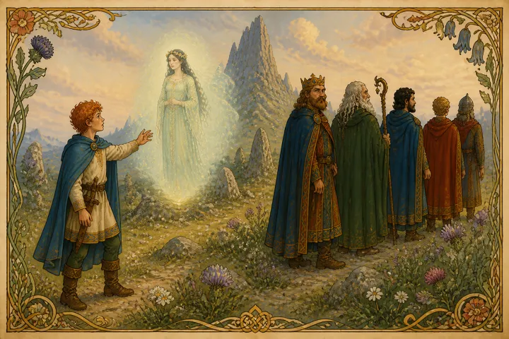
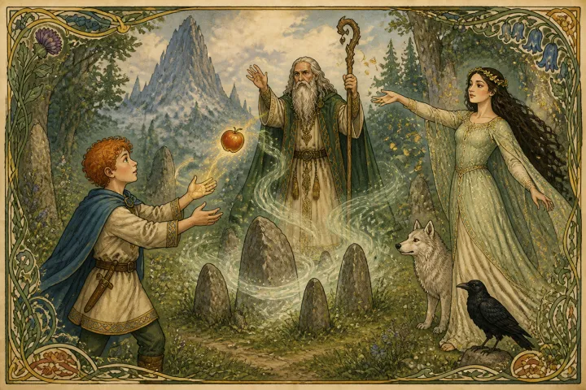
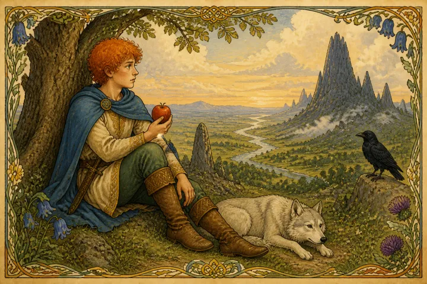
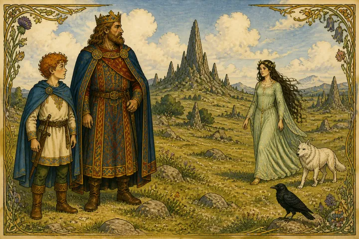
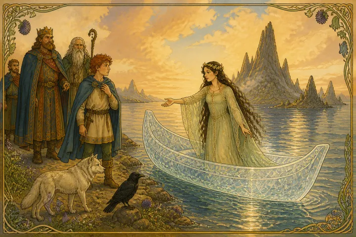
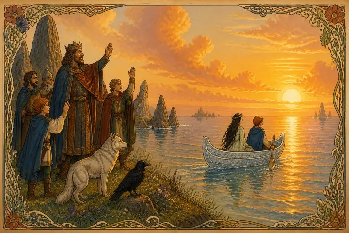

Connla of the Fiery Hair was son of Conn of the Hundred Fights. One day as he stood by the side of his father on the height of Usna, he saw a maiden clad in strange attire towards him coming.
"Whence comest thou, maiden?" said Connla.
"I come from the Plains of the Ever Living," she said, "there where is neither death nor sin. There we keep holiday alway, nor need we help from any in our joy. And in all our pleasure we have no strife. And because we have our homes in the round green hills, men call us the Hill Folk."
The king and all with him wondered much to hear a voice when they saw no one. For save Connla alone, none saw the Fairy Maiden.
"To whom art thou talking, my son?" said Conn the king.
Then the maiden answered, "Connla speaks to a young, fair maid, whom neither death nor old age awaits. I love Connla, and now I call him away to the Plain of Pleasure, Moy Mell, where Boadag is king for aye, nor has there been sorrow or complaint in that land since he held the kingship. Oh, come with me, Connla of the Fiery Hair, ruddy as the dawn, with thy tawny skin. A fairy crown awaits thee to grace thy comely face and royal form. Come, and never shall thy comeliness fade, nor thy youth, till the last awful day of judgment."
The king in fear at what the maiden said, which he heard though he could not see her, called aloud to his Druid, Coran by name.
"O Coran of the many spells," he said, "and of the cunning magic, I call upon thy aid. A task is upon me too great for all my skill and wit, greater than any laid upon me since I seized the kingship. A maiden unseen has met us, and by her power would take from me my dear, my comely son. If thou help not, he will be taken from thy king by woman's wiles and witchery."
Then Coran the Druid stood forth and chanted his spells towards the spot where the maiden's voice had been heard. And none heard her voice again, nor could Connla see her longer. Only as she vanished before the Druid's mighty spell, she threw an apple to Connla.

For a whole month from that day Connla would take nothing, either to eat or to drink, save only from that apple.

But as he ate it grew again and always kept whole. And all the while there grew within him a mighty yearning and longing after the maiden he had seen.
But when the last day of the month of waiting came, Connla stood by the side of the king his father on the Plain of Arcomin, and again he saw the maiden come towards him,

and again she spoke to him.
"'Tis a glorious place, forsooth, that Connla holds among shortlived mortals awaiting the day of death. But now the folk of life, the ever-living ones, beg and bid thee come to Moy Mell, the Plain of Pleasure, for they have learnt to know thee, seeing thee in thy home among thy dear ones."
When Conn the king heard the maiden's voice he called to his men aloud and said:
"Summon swift my Druid Coran, for I see she has again this day the power of speech."
Then the maiden said: "O mighty Conn, Fighter of a Hundred Fights, the Druid's power is little loved; it has little honour in the mighty land, peopled with so many of the upright. When the Law comes, it will do away with the Druid's magic spells that issue from the lips of the false black demon."
Then Conn the king observed that since the coming of the maiden Connla his son spoke to none that spake to him. So Conn of the Hundred Fights said to him, "Is it to thy mind what the woman says, my son?"
"'Tis hard upon me," said Connla; "I love my own folk above all things; but yet a longing seizes me for the maiden."
When the maiden heard this, she answered and said: "The ocean is not so strong as the waves of thy longing. Come with me in my curragh, the gleaming, straight-gliding crystal canoe.

Soon can we reach Boadag's realm. I see the bright sun sink, yet far as it is, we can reach it before dark. There is, too, another land worthy of thy journey, a land joyous to all that seek it. Only wives and maidens dwell there. If thou wilt, we can seek it and live there alone together in joy."
When the maiden ceased to speak, Connla of the Fiery Hair rushed away from his kinsmen and sprang into the curragh, the gleaming, straight-gliding crystal canoe. And then they all, king and court, saw it glide away over the bright sea towards the setting sun, away and away, till eye could see it no longer. So Connla and the Fairy Maiden went forth on the sea, and were no more seen, nor did any know whither they came.
